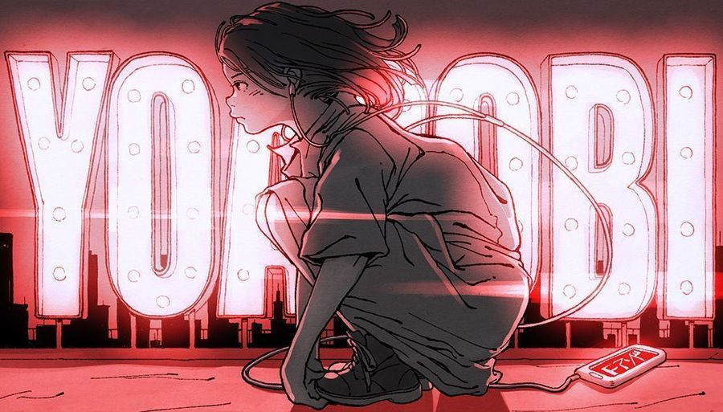
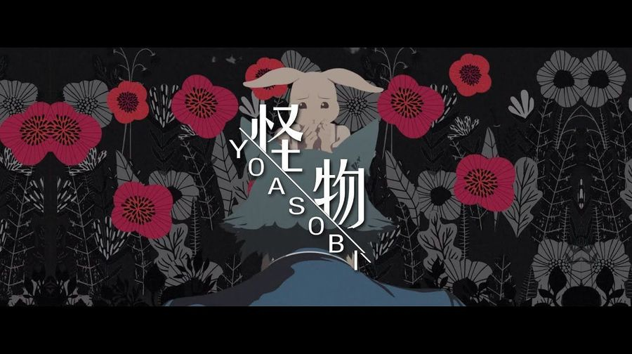
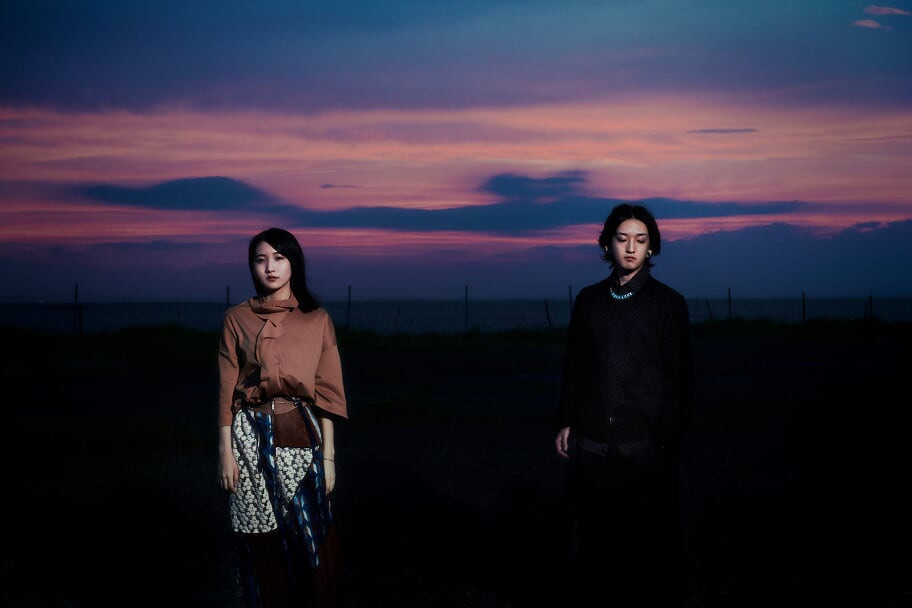

YOASOBI



❮
❯
簡介
Ayase和ikura兩人除了YOASOBI外，都還有原本就在進行的工作，於是決定將各自的工作視為「早上的活動」，反之YOASOBI這個組合就是「晚上的活動」，所以取名YOASOBI（夜遊び）帶有「在夜晚玩耍」意境的詞為他們的團名。
成員介紹

×

1994年4月4日出生，山口縣出身。於2018年12月開始投稿VOCALOID音樂作品。以悲傷和哀愁的旋律，以及引人深思的歌詞而受到廣泛歡迎。他於2019年4月發表的作品「最後的避難所」在YouTube上突破了1,300萬次觀看。他於2019年11月發行的首張EP專輯「幽靈東京」也迅速售罄。他以自己翻唱VOCALOID音樂而聞名，其中「幽靈東京」已突破了1900萬次觀看，「夜撫的玻璃」也突破了2200萬次觀看。除了作為YOASOBI的作曲家活動外，他還為多位不同的藝術家提供音樂創作。
2000年9月25日出生，出生地為東京都。作為創作歌手"幾田りら"活躍，他於2021年3月發行的單曲「Answer」被選為東京海上日動安心人壽「安心就業不能保障保險」廣告曲。他在2021年7月16日上映的細田守導演的電影《竜與小太陽的姬》中首次擔任配角聲優，飾演主角·鈴的朋友等多個角色，並在多個領域積極活躍。